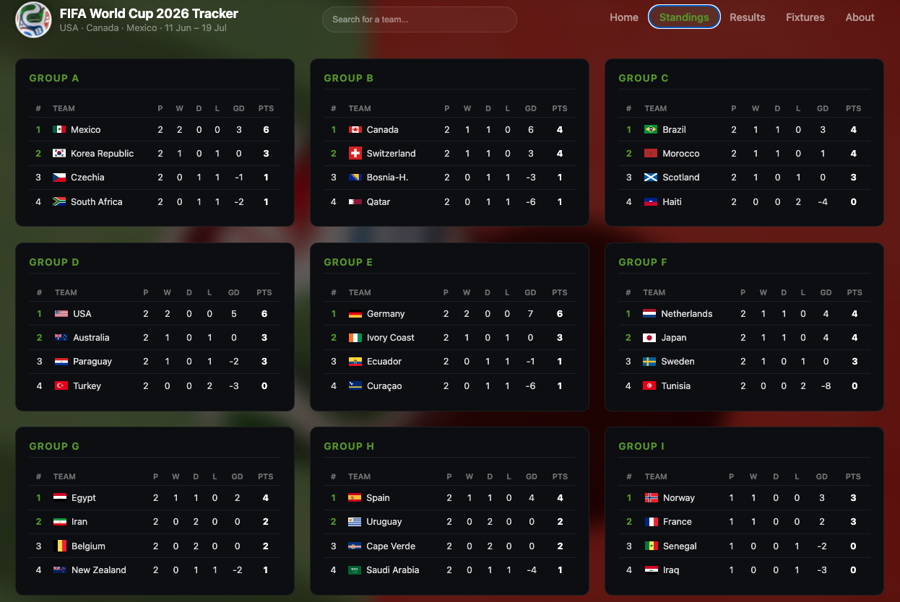
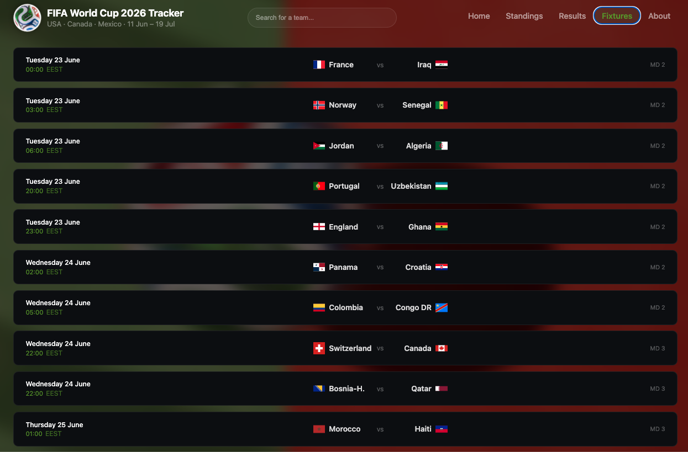
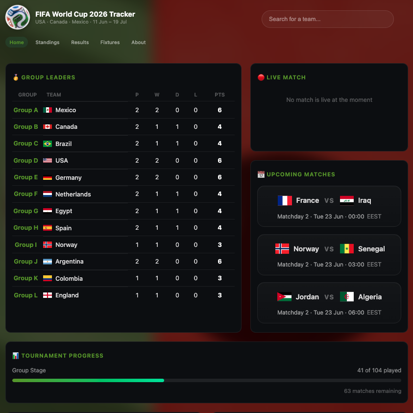

A World Cup 2026 tournament dashboard built with React, TypeScript,
and Vite. It brings together fixtures, results, group standings,
top scorers, team search, and SQL-powered tournament analytics.

Features
-
Home dashboard
- Full knockout bracket from the Round of 32 to the final, including the third-place match.
- Top 10 scorer rankings with team crests and names.
- Six most recent completed matches.
- Image carousel featuring World Cup 2026 venues and highlights.
-
Analytics
- Tournament overview with KPI cards for finished matches, in-play goals, goals per match, penalty
shootouts, and draws after play.
- Scoring-by-stage table showing matches, goals, goals per match, penalty shootouts, and draws.
- Team performance charts for top attacks and best defences.
- Sortable team statistics table with performance rank, matches, goals, goal difference, and goals
per match.
- Highest-scoring matches ranking based on in-play goals.
-
Tournament pages
- Group standings for all 12 groups with played, won, drawn, lost, goal difference, and points.
- Results by matchday and knockout stage.
- Fixture list with dates, times, and venues.
- Team search across all 48 teams, including results, next match, scorers, and status.
- About page with tournament information, fun facts, and external resources.
-
Score handling
- Penalty-shootout kicks are separated from the in-play score.
- A 1–1 draw decided 3–4 on penalties is displayed as 1–1 (3–4 pens).
- Analytics and goal-based rankings use in-play goals only.


Data Architecture
- Match, team, scorer, standings, and analytics data are stored in Supabase Postgres.
- SQL views prepare frontend-friendly match data and analytics-ready summaries.
- Analytics views include tournament overview, stage analytics, team performance, and highest-scoring
matches.
- football-data.org is still used for pages that have not yet been migrated to Supabase.
- Row Level Security keeps tournament data publicly readable but not editable from the browser.
Tech Stack
- React 19
- TypeScript
- Vite
- React Router v7
- Supabase Postgres
- SQL views
- football-data.org API
- Vitest
- Vercel

Explore World Cup 2026 Tracker
Explore fixtures, results, standings, top scorers, team details,
and tournament analytics for the FIFA World Cup 2026.
Open Live Demo
View GitHub